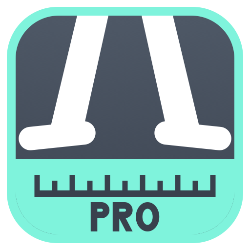
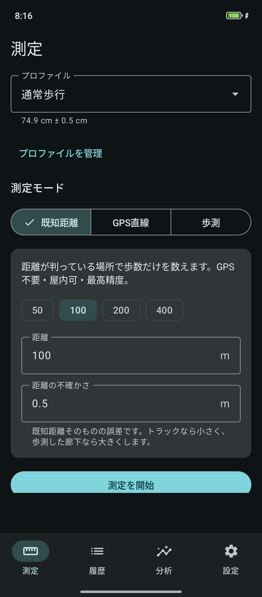
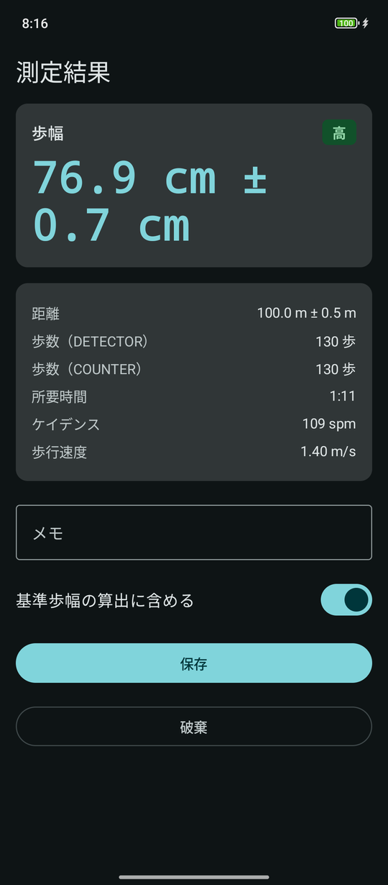
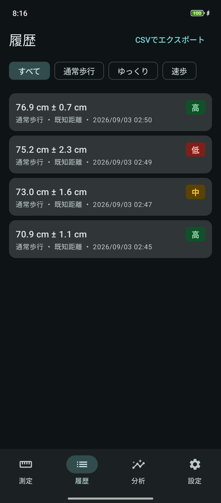
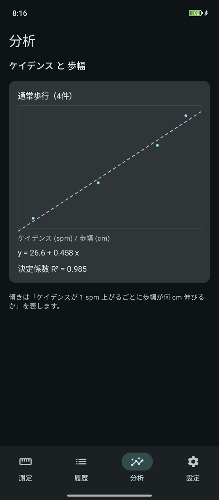

歩幅計Pro
歩数計ではありません。歩幅そのものを、誤差±付きで測ります。




「74.2 cm」ではなく「74.2 cm ± 1.6 cm」を出します
歩幅は「距離 ÷ 歩数」の割り算です。それだけなら誰でも出せます。
ただ、同じ「74.2 cm」でも、± 1.6 cm の測定と ± 5.0 cm の測定では意味がまったく違います。誤差を伏せた数値は、当たっているのか偶然なのか判断できません。だからこのアプリは、必ず ± を付けて出します。
品質は「高 / 中 / 低」で表示し、なぜその判定になったのかも添えます。歩数センサーが2系統でずれていた、測定距離が短すぎた、といった理由がその場で分かります。
GPSの経路積分をしません
GPSの点をつないだ長さを距離とする方法は、測位のブレが常に距離を伸ばす方向に効きます。まっすぐ歩いても、実際より数％から十数％長く出ます。
このアプリは始点と終点の2点間距離だけを使います。誤差が積み上がらないので、長く歩くほど相対誤差が小さくなります。そのかわり、曲がった経路は測定できません。
3つの測り方
- 既知距離モード — 距離が判っている場所（トラック、廊下、直線道路）で歩数だけを数えます。GPS不要、屋内可、いちばん正確です
- GPS直線モード — 屋外で直線を歩きます。始点と終点で10秒ずつ静止し、測位を平均して精度を上げます
- 歩測モード — 基準歩幅から、歩数で距離を逆算します。GPS不要。「この道は何メートルあるんだろう」を歩くだけで測れます
条件ごとに基準歩幅を持てます
歩幅は歩く速さや靴で変わります。「通常歩行」「ゆっくり」「速歩」のようにプロファイルを分けて、それぞれの基準歩幅を持てます。
基準歩幅は単純平均ではなく逆分散加重平均で求めます。精度の高い測定ほど自動的に重く効くため、条件の悪い測定に引きずられません。明らかな外れ値は自動で除き、一覧では区別して表示します。
そのほか
- 測定中は音声とバイブで案内するので、画面を見ずに歩けます
- 端末をポケットに入れたまま、画面を消したまま測定できます
- ケイデンス（歩/分）と歩幅の関係を、散布図と回帰直線で見られます
- 履歴はCSVで書き出せます
- 歩幅／ストライド、m／cm／ft-in を切り替えられます
- 配色は「歩幅計Proの配色」と「端末に合わせる」から選べます
ご利用にあたって
- 歩数センサーを搭載した端末が必要です。非搭載の端末では測定できません
- 100 m 以上歩くと誤差が小さくなります。50 m 未満では品質が「低」になります
- 省電力設定によっては、画面を消している間にセンサーが止まることがあります。測定が途切れる場合は、本アプリをバッテリー最適化の対象外に設定してください
データの取り扱い
測定した内容は端末内にのみ保存されます。GPS直線モードで取得した緯度経度も含めて、アプリが外部へ送信することはありません。
ただし広告を表示するため、広告配信のための情報が収集されます。詳しくは歩幅計Proのプライバシーポリシーをご覧ください。
測定中は広告を表示しません。終了ボタンを押すために端末を取り出す場面で、誤って広告に触れてしまうことを避けるためです。